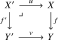
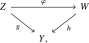
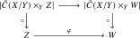
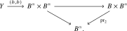
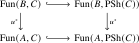
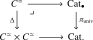

The notion of a Čech cover leads to the definition of a cover.
Definition 11.2.1. A morphism \(f\colon X \to Y\) in \(\An\) is said to be a cover if the induced map \(\abs{\pi_f}\colon \abs{\check{C}(X/Y)} \to Y\) is an isomorphism.
In homotopy type theory, covers are usually called surjections.
Remark 11.2.2. For any pullback square

Definition 11.2.3 (Essential surjectivity). A functor \(F\colon C \to D\) of categories is called essentially surjective if the induced map \(F^{\simeq}\colon C^{\simeq} \to D^{\simeq}\) on groupoid cores is a cover.
Proposition 11.2.4. For any morphism \(f\colon X \to Y\), the map \(X \to \abs{\check{C}(X/Y)}\) induced from the degree-zero term \(\check{C}(X/Y)_0=X\) is a cover. In particular, \(f\) factors as a composite \[ X \xrightarrow{\mathrm{cover}} \abs{\check{C}(X/Y)} \xrightarrow{\mathrm{embedding}} Y. \]
Proof
Write \(I=\abs{\check C(X/Y)}\). Since \(I\hookrightarrow Y\) is an embedding, the relative Čech nerve of \(X\to I\) agrees with that of \(X\to Y\). Its realization is therefore \(I\), so \(X\to I\) is a cover. The second assertion now follows from Corollary 11.1.12.
Definition 11.2.5. We refer to the anima \(\abs{\check{C}(X/Y)}\) as the image of \(f\), and denote it by \(\Im(f)\).
Proposition 11.2.6. Let \(f\colon X \to Y\) be a morphism in \(\An\). The following conditions are equivalent.
(i) The map \(f\) is a cover.
(ii) The pullback functor \[ f^*\colon \Cat_{/Y} \to \Cat_{/X} \] is conservative.
(iii) The pullback functor \[ f^*\colon \An_{/Y} \to \An_{/X} \] is conservative.
Proof
Assume that \(f\) is a cover and
consider a morphism \(\varphi\colon Z \to W\) over \(Y\):
 
Corollary 11.2.7. Let \(f\colon X\to Y\) and \(g\colon Y\to Z\) be two functors between small animae.
(a) If \(f\) and \(g\) are covers, so is \(g\circ f\).
(b) If \(g\circ f\) is a cover, so is \(g\).
Proof
We will use characterization (iii) of Proposition 11.2.6. To prove assertion (a) we observe that if \(g^*\) and \(f^*\) are conservative functors, so is the composite \(f^*\circ g^*\simeq (g\circ f)^*\). Similarly, to prove assertion (b), we check that if the composite \(f^*\circ g^*\simeq (g\circ f)^*\) is conservative, then so is \(g^*\).
Corollary 11.2.8. For any diagram \(X\leftarrow A \to Y\) of animae, the map \(X\amalg Y \to X\amalg_A Y\) is a cover.
Proof
Corollary 13.2.3 says that the composite \begin{equation} X\amalg A \amalg Y\to X\amalg Y \to X\amalg_A Y \tag{11.1}\end{equation} (where we use either \(A\to X\) or \(A\to Y\) in the first map) is a cover, hence also the second map by Corollary 11.2.7.
Corollary 11.2.9. Any retract of a cover is a cover.
Proof
We will use again characterization (iii) of Proposition 11.2.6. Any retract of a conservative functor is conservative (this follows from Proposition 6.4.14, since any retract of a pullback square is a pullback square). Therefore, if \(f\) is a retract of \(g\) then \(f^*\) is a retract of \(g^*\).
The following is an important consequence of Proposition 11.2.6.
Proposition 11.2.10. Let \(f\colon X \to Y\) be a map between animae that is both a cover and an embedding. Then \(f\) is an equivalence.
Proof
In general, in order to check that \(f\) is an equivalence, we may regard it as a morphism in \(\An_{/Y}\). By Proposition 11.2.6, it will suffice to show that its pullback \(\pr_2\colon X \times_Y X \to X\) along itself is an equivalence. In other words, without loss of generality, we may assume furthermore that \(f\) has a section and apply Lemma 1.6.24.
We now finally get the strengthening
Proposition 11.2.11. Let \(f\colon A \to B\) be a functor. If \(f\) is fully faithful and if the map \(f^{\simeq}\colon A^{\simeq} \to B^{\simeq}\) is a cover, then the functor \(f\) is an equivalence.
Proof
Since \(f\) is fully faithful, the functor \(f^{\simeq}\) is an embedding, hence by Proposition 11.2.10 it is an equivalence. In particular, \(f^{\simeq}\) admits a section, hence by Theorem 6.3.8 the functor \(f\) is an equivalence.
Proposition 11.2.12. Let \(f\colon X \to Y\) be a morphism in \(\An\). Then the following are equivalent:
(1) The morphism \(f\) is a cover;
(2) For every embedding \(Z \to Y\), if we have \(X \times_Y Z \iso X \times_Y Y = X\) then \(Z \iso Y\).
Proof
The fact that (1) implies (2) is an instance of Proposition 11.2.6. The fact that (2) implies (1) follows by taking \(Z = \abs{\check{C}(X/Y)} \hookrightarrow Y\), so that \(X \times_Y Z = \abs{\check{C}(X \times_Y X/ X)} \iso X\).
Theorem 11.2.13. Let \(u\colon A \to B\) be a functor. Assume there exists a cover \(i\colon X \to B^{\simeq}\) such that for every object \(x\) of \(X\), the relative slice category \(A_{/i(x)} = A \times_B B_{/i(x)}\) admits a terminal object. Then \(u\) admits a right adjoint.
Proof
For any anima \(\Gamma\), we can consider the situation in context \(\Gamma\): we may ask whether the resulting functor \(u_{\Gamma} \colon A_{\Gamma} \to B_{\Gamma}\) admits a right adjoint in context \(\Gamma\). If this holds for \(\Gamma = B^{\simeq}\), it also holds in the absolute context.
If \(Y\) is an anima equipped with a map \(b\colon Y \to B^{\simeq}\), then in context \(B^{\simeq}\) this looks like

Proposition 11.2.14. Let \(u\colon A\to B\) be an essentially surjective functor. Then, for every category \(C\), the restriction functor \[ u^*\colon\Fun(B,C)\longrightarrow\Fun(A,C) \] is conservative.
Proof
We may assume that we work in a universe so that \(A\), \(B\) and \(C\) are small.
Since \(u^\simeq\) is a cover,
Proposition 11.2.6, applied objectwise,
implies that, for any category \(X\), the functor
\[
u^*\colon \Fun(B,\Fun(X,\An))\to\Fun(A,\Fun(X,\An))\, .
\]
is conservative (because one can check equivalences objectwise).
We consider finally the commutative square

Warning 11.2.15. The converse of Proposition 11.2.14 is false, already for ordinary categories. Let \(B\) be the category generated by \[ b\xrightarrow{i}a\xrightarrow{r}b, \qquad ri=\id_b, \] with no further relations, and let \(A\subset B\) be the full subcategory on \(a\). The inclusion is not essentially surjective, since \(b\) is not isomorphic to \(a\). Nevertheless, restriction \(\Fun(B,C)\to\Fun(A,C)\) is conservative for every \(C\). Indeed, if \(\alpha\colon F\to G\) is a natural transformation and \(\alpha_a\) is invertible, then \[ F(r)\circ\alpha_a^{-1}\circ G(i) \] is inverse to \(\alpha_b\), by naturality and the relation \(ri=\id_b\).
Corollary 11.2.16. For any category \(C\) and any family of morphisms \(W\) stable under composition in \(C\), the localization functor \(\gamma\colon C\to C[W^{-1}]\) induces a cover \[ \gamma^\simeq\colon C^\simeq\to (C[W^{-1}])^\simeq\, . \]
Proof
Let \(I\hookrightarrow (C[W^{-1}])^\simeq\) be the image of \(\gamma^\simeq\), and let \(j\colon L_I\hookrightarrow C[W^{-1}]\) be the corresponding full subcategory. The localization functor factors as \(C\xrightarrow{\gamma'}L_I\xrightarrow{j}C[W^{-1}]\). Since \(L_I\) is full, \(\gamma'\) sends every morphism of \(W\) to an isomorphism. The universal property of the localization therefore gives a functor \(s\colon C[W^{-1}]\to L_I\) satisfying \(s\gamma = \gamma'\). Hence \(js\gamma = \gamma\). Precomposition with \(\gamma\) is fully faithful, so \(js = \id_{C[W^{-1}]}\). Thus the full embedding \(j\) is essentially surjective and hence an equivalence. It follows that \(I\hookrightarrow (C[W^{-1}])^\simeq\) is an equivalence, which says exactly that \(\gamma^\simeq\) is a cover.
Corollary 11.2.17. For every category \(C\), the canonical localization functor \(C\to\Pi_{\infty}(C)\) induces a cover \[ C^\simeq\to\Pi_{\infty}(C)\, . \]
Proof
Apply Corollary 11.2.16 to the localization of \(C\) at the subcategory of all its morphisms.
Proposition 11.2.18 (Non-axiom of replacement). Let \(C\) be a locally small category and \(\Gamma\) a small anima. We consider a functor \(f\colon\Gamma\to C^\simeq\). Then \(\Im(f)\) is small. In particular, the full subcategory of \(C\) with anima of objects \(\Im(f)\) is small.
Proof
For any \(x,y : C^\simeq\), we have an embedding
\[
C^\simeq(x,y)\hookrightarrow C(x,y)
\]
with small codomain. Therefore, the anima \(C^\simeq\) is locally small.
In other words, there is a pullback square of the form

Denote by \(D\) the full subcategory of \(C\) spanned by \(\Im(f)\). To see that \(D\) is small, we use 10, so that it suffices to show that the anima \(\Map([1],D)\) is small. We have \begin{equation} \Map([1],D) \simeq \sum_{x,y : D^\simeq}D(x,y), \tag{11.2}\end{equation} where we have just established that \(D^\simeq \simeq \Im(f)\) is small. Moreover, for each \(x,y:D^\simeq\), we have \(D(x,y)\simeq C(ix,iy)\), where \(i\colon D\to C\) is the defining embedding, each of which is a small anima by local smallness of \(C\). Since small animae are closed under Sigma-types (by 9 and 1), it follows that \(\Map([1],D)\) is small, as claimed.
Remark 11.2.19. In homotopy type theory, the statement that the image of a map \(f\colon X\to Y\) from a small type \(X\) to a locally small type \(Y\) is itself small is called the principle of replacement. It is either assumed as an axiom or can be derived in the presence of suitable higher inductive types.
When \(Y\) is the type of small types (which is indeed locally small by univalence), this is analogous to the replacement axiom schema of ZFC, that says that the image of any function \(X\to V\), where \(X\) is a set and \(V\) is the set-theoretic universe (which is not itself a set, but only a class), is again a set.